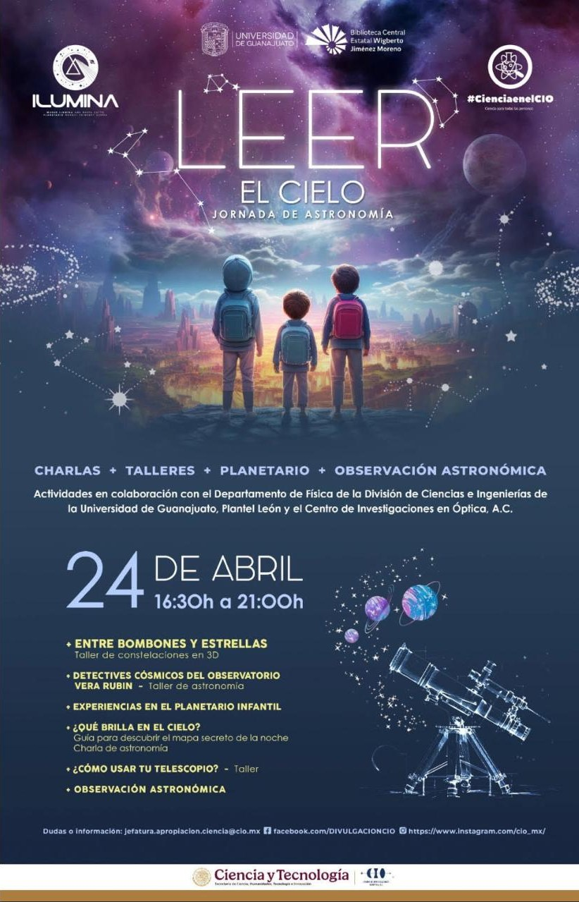

Entre bombones y estrellas
Taller de constelaciones en 3D.
Jornada realizada · Abril 2026
Charlas, talleres, planetario y observación
Actividades en colaboración con el Departamento de Física de la División de Ciencias e Ingenierías de la Universidad de Guanajuato, Plantel León, y el Centro de Investigaciones en Óptica, A.C.

Taller de constelaciones en 3D.
Taller de astronomía.
Guía para descubrir el mapa secreto de la noche. Charla de astronomía.
Participaron la Universidad de Guanajuato, la Biblioteca Central Estatal Wigberto Jiménez Moreno, el Centro de Investigaciones en Óptica (#CienciaenelCIO), ILUMINA y la Secretaría de Ciencia, Humanidades, Tecnología e Innovación.
Descargar póster